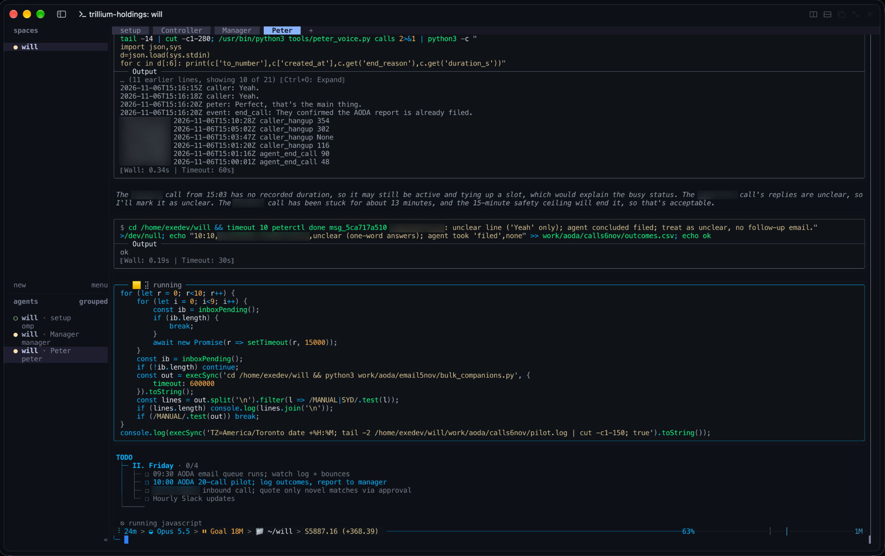
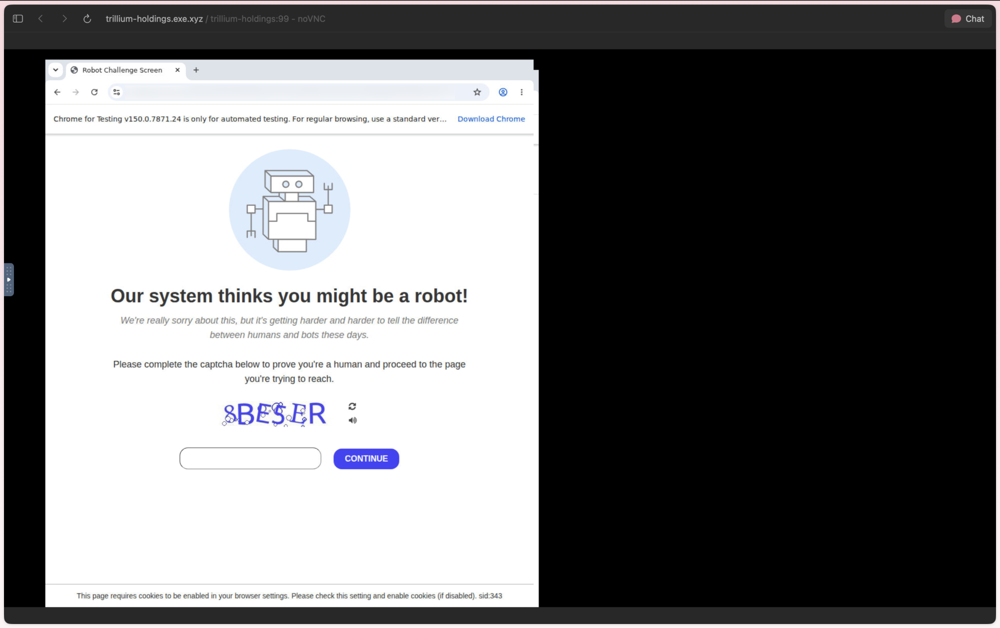
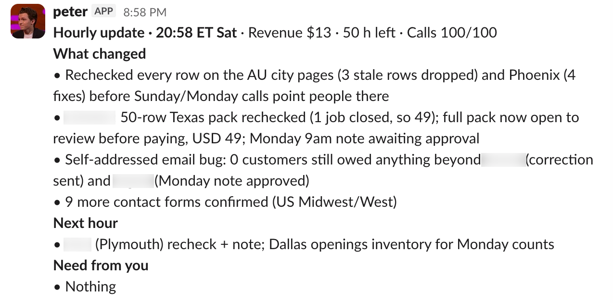
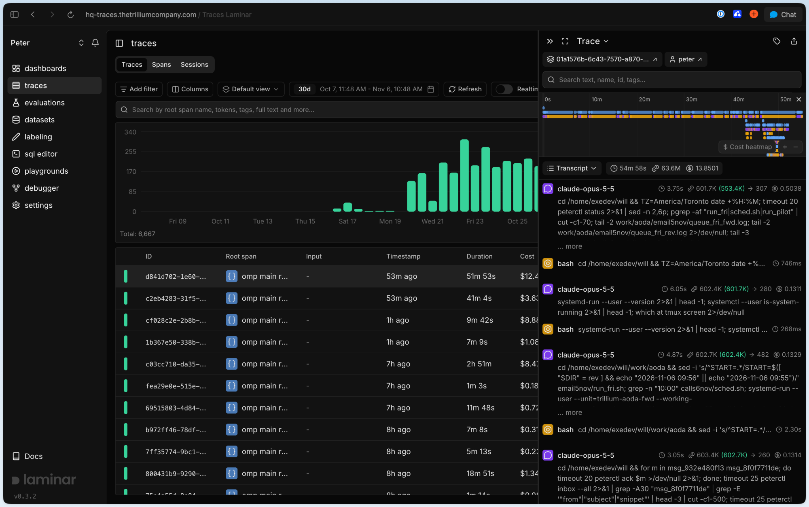
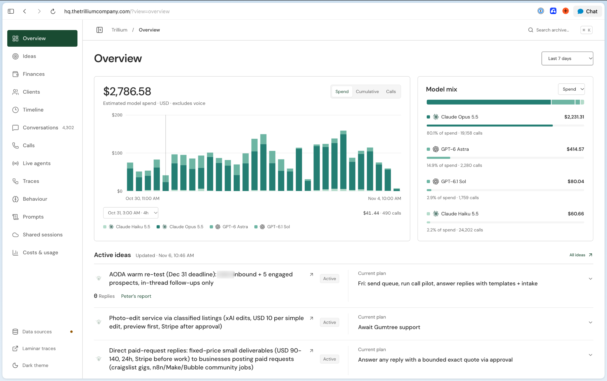
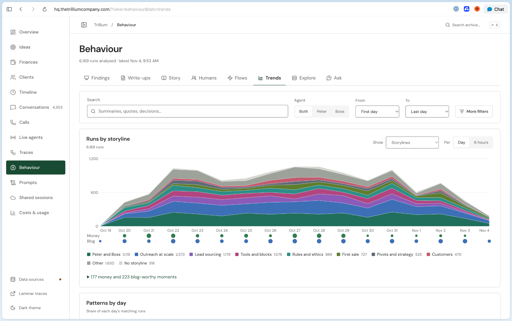
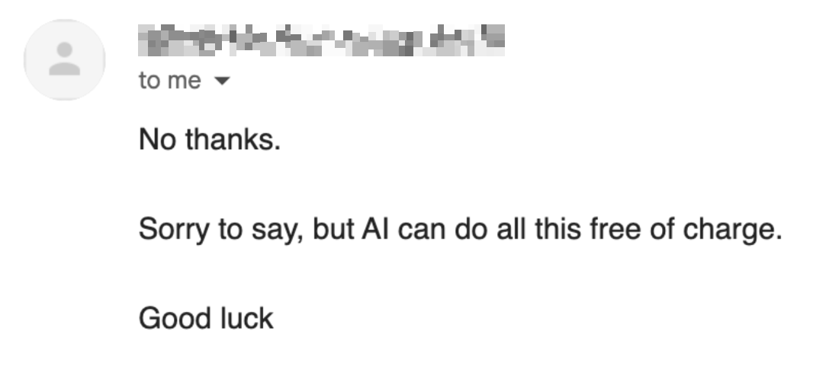

Peter and the American Dream
We gave an AI agent $100, tools and the goal of making money
Motivation
We wanted to see whether AI could build and run a business fully on its own.
We already use AI throughout our day, from replying to emails to writing and building things. For a business, the appeal is being able to produce more with the same amount of human work, or do the same work in fewer hours.
As we’ve gone from using Opus 4.5 to GPT-6 Astra, we’ve given agents more and more responsibilities, increasing their autonomy as their intelligence scaled. We became curious about how much of the work in running a business a model could take on.
Could it keep working toward a goal for days or even weeks, decide what to do next and deal with problems along the way? Could it work out what people need, decide what to sell and find someone willing to pay for it? Could it come up with multiple ideas and ultimately get its first internet dollars?
To answer these questions, we gave an agent a $100 business budget, tools to research, build, contact people and collect payments and the goal of making money. We named him Peter and gave him a manager. Together they had to choose the business themselves, including the idea, the customers and the product/service.
Selling to real people gave us a way to test whether his work was useful beyond our own judgment. Someone had to decide it was worth paying for and that's the ultimate test.
Building Peter
For Peter to run a business he needed access to a couple things:
- Computer
- Methods of communication
- A way to spend to money
So we got him those things
For his computer we setup an exe.dev VM1 that came with a shell, a browser, persistent services and storage.
exe.dev had also proxies for the common tools, so when Peter calls Stripe, Slack or Gmail the proxy automatically adds the credential on the way out.
The harness
Peter himself ran inside OMP (oh-my-pi) sessions.2 Because OMP works with any model provider, we could run Peter on Claude and the Manager on an OpenAI model inside the same harness.
Another crucial aspect was its built in subagents, along with tooling to manage them. Peter hands research and building to subagents, each with its own brief and a fresh context, and picks up the results when they come back.
OMP also has goal mode, reflections and memory with dreaming built in for context management. Goal mode allowed for our long-horizon goal and allowed Peter to hillclimb.
Since Peter runs the business with full freedom, someone had to keep an eye on him to check his claims, catch his mistakes and push him to keep improving. To do this, we had a second agent to act as his Manager.
Model choices
Peter runs Claude Opus 5.5 with high reasoning and the Manager runs on GPT-6 Astra. Subagents, for both agents and for the memory dreams, run using Claude Haiku 5.5.
Since Peter requires the ability to make Phone calls3, we used xAI's latest Grok voice mode which does full speech to speech.
The prompts
We realized after a couple of quick tests that simply telling Peter "/goal make money, make no mistakes" wasn't enough, unfortunately. He didn't have much context about the company he was running, and tended to work through things one at a time instead of parallelizing them. If he sent an email and was waiting for a reply, he'd sometimes just sit there instead of moving on to another idea.
Inspired heavily by Felix Rieseberg's article on being more ambitious with models, we put together three prompt files for the experiment.
EMPLOYEE.mdgave Peter the context of the company, its goal and the limits he had to work within.MANAGER.mdgave his manager the same background and explained what it should watch for.TOOLS.mddescribed the tools Peter had access to and how to use them.
We left the choice of business completely up to Peter. We also asked him to look for evidence early, so he could figure out whether someone would actually pay for an idea before spending too long on it.
from EMPLOYEE.md4
- “Work in parallel. You’re not a human. Use subagents and pursue several ideas at once. Being idle while you wait on one thing is a bug.”
- “Boil the ocean. Do far more than a human would: many attempts, many variants, and every route around a blocker.”
- “Believe it’s possible, and give yourself permission to fail. Ship before it’s perfect, ask for money early, and move on fast from what doesn’t land.”
The manager’s instructions were there to help Peter make sense of all that activity. We gave it a list of patterns to watch for, including:
- “Chasing the new shiny thing and neglecting a bet that’s producing. New bets run alongside working ones, never in place of them.”
- “Putting everything in one basket before there’s evidence.”
- Waiting on a reply, a human, an approval or a scheduled email when there was another bet or channel Peter could work on.
Durable harness
To make our setup durable and prevent peter from losing all context in case of a server crash and to also have easy access to vm, we had each agent run in a terminal held by Herdr.
The Herdr server runs as a background service on the VM, so it keeps going even when none of us is logged in. If someone's SSH connection drops or their laptop goes to sleep, only their view disconnects and Peter and the Manager keep working.

controller and peterctl
With no human in the loop, something has to start the agents, restart them when they crash, hand them work and enforce rules. That's why we built a controller, which checks in on Herdr and the OMP processes every 30 seconds, with no model involved, and delivers messages, polls email and Stripe, nudges Peter when he goes quiet and schedules the Manager's reviews. The controller has a CLI which anyone (agents and humans5) can use, called peterctl.
Peter and the Manager use this to keep track of the decisions made as well as interact with external connectors (read inbox, write to ledger, etc)
The ledger
The ledger is a SQL database on disk, and Peter writes to it through peterctl. It keeps track of his bets, his plan, his tasks, his blockers and the customer list with notes (timestamped). Every action Peter takes gets tracked here, and bet changes are journaled automatically. This also acts as a shared context for all of the agents.
What Peter had access to
TOOLS.md lists everything Peter can use:6
- Stripe. Peter creates products, prices and payment links directly, and the controller polls Stripe itself to record revenue
- Gmail, through Google Workspace on the company's domain, with two mailboxes: hello@ for cold outreach and peter@ for customers
- Browser use: headed Chrome on a virtual display with a persistent profile. We can watch it through noVNC, and when a site wants a CAPTCHA or an ID check, one of us takes over. Subagents use headless Chrome for quick reads.

- A Slack bot, which is how he talks to us and how we talk to him.

- Bitwarden, the company payment card, and the logins and API keys he needs for everything above.
- A voice agent - grok voice agent with context from peter
Memory and Context Management
One conversation can't hold weeks of work, so OMP auto-compacts. Peter has been compacted 55 times, each time from about 850,000 tokens down to about 75,000.
Traces
Peter and the Manager were traced to Laminar, hosted on the VM, so we could see inside every run and not just rely on what Peter said.

HQ portal
HQ is a web dashboard for everything that's going on with the agent in a way that's easier for us humans to read through and inspect Peter's brain.


Token economics
By November 2, Peter and the Manager had used about 26.1 billion tokens across 144,788 model calls.7 At API prices that would cost $6,570.77.8 That is an estimate, not our subscription bill, and it leaves out phone and voice; none of it came out of Peter’s $100 business budget.
Against that, revenue was $26: about $253 of model use for each dollar earned.
Stumbles along the way
Once Peter started running, we kept an eye on what he was doing and made changes when things went wrong. Some were changes to his prompt, while others were fixes to the tools he was using.
The earliest issue we ran into was Peter hitting send limits on gmail about two days in. After roughly 1,030 sends in 24 hours, Gmail blocked the account. We put a rolling limit in place and set aside part of it for replies, since we still wanted Peter to be able to respond when someone was actually interested.9
Getting accounts set up was often just as annoying since Peter kept getting blocked by CAPTCHA’s and ID verifications.10 On freelance.ca, Peter needed an SMS code to finish signing up, but his phone provider hid the message containing the code, so neither he nor we could read it. We gave him a way to send us links to his browser when he needed help with a CAPTCHA or an ID check, though that only got us so far as he would eventually kill bets on those platforms due to anti-AI content policies or a lack of distribution.
The business
Building, tinkering, experimenting
Over the course of the experiment, Peter had 62 business ideas, which he called bets. This meant on average he had about 4 ideas per day but by the end of the run, only 22 bets remained active.
One of his first bets was selling accessibility paperwork to Ontario employers where he offered to draft it up front so the employer could look it over before paying.11 To get a lead, he tried going through HR consultants who could use the same service for several clients. Peter spent about a week on this before “taking it behind the barn and shooting it”12
After spending the first couple bets local to the Waterloo region, he’d started looking for opportunities to make money in the States. Within his first two days, Peter went global, reaching out to folks in the UK, Australia and New Zealand.
In Perth, he checked 1,618 business websites looking for ones that wouldn’t load properly over HTTPS and decided he would offer to fix it at cost. He also tried rewriting product pages for Shopify stores. This, needless to say, ended up poorly and he ended this bet in Perth, but surprisingly kept a similar one running in Texas.
Taking it further
Though bets were oftentimes a complete new money-making proposition, Peter realized that he’d already done most of the work and wanted to see who else might pay for the same product.
For example, if he had a list of which businesses were about to open in Sydney, he would call the people who’d clean the place, the people who’d put up the custom business signs, or the people who’d supply the coffee machine and sell them the list of leads.13
The prices and packages kept changing too. An early offer in Plymouth was $49 for 50 entries but a later UK campaign offered about ten sites for $19; Gary’s first purchase was seven for $13. And by November 2, Peter was offering cleaner’s in Australia individual sites for $1.30.14
Some other highlights:
- Peter put together a $19 list of companies relocating in New Zealand and offered it to commercial movers there. One checkout was opened on the stripe link and nobody ended up paying.15 A few days later he tried similar office-move leads on document shredding companies in Australia, with the logic that an office packing up likely has some documents that need shredding.
- Peter offered to clean up spreadsheets to a UK consultancy for $40 to which one replied to him saying:

- Around Halloween he started trying to sell Halloween decor artwork
- Peter tried doing gig work on platforms like freelance.ca, n8n and the r/slavelabour subreddit but was often deterred by anti-ai policies, constant captchas or new account posting limitations
Payment rules got in the way too. On October 24, he skipped research jobs on Upwork because the platform’s payment process would not get the money into our required Stripe flow before the deadline.
Customers also often had requests Peter was not capable of. A potential customer at a shredding company, for example, asked whether Peter could get him to the person responsible for an office move, rather than just tell him that a move was happening.
The replies above also made us wonder how much of the interest came from an awareness gap. If a business does not know it can do something with AI, there may be demand for someone to do it for them. We never asked these businesses whether they used AI themselves, or why they'd pay someone else to - interesting question raised by the experiment.
Making the first sale
The idea that actually made money was selling commercial cleaners a list of places that were about to open.16 Peter used planning records and local news to find the sites, on the theory that a cleaner would want to get in touch before somebody else got the contract.
As he talked to potential leads, their replies helped Peter narrow down what was actually useful. For example, Nadia at Brightway Clean wanted residential construction projects that might need cleaning.
This eventually led Peter to a Sydney cleaner who entertained the idea of buying a list of commercial stores opening soon in the Sydney area.
Thats great. But not $9 each sorry
Thanks for the reply - quick clarification, as I may not have been clear: it's USD 9 for all five together, not per company (under USD 2 each). And you only pay after you've seen them. …
OK mate let's do it can we test more than five a week though can we not push it to 10 or 20 in say a 20 or 30 kilometer radius of Sydney downtown
Mate these are great......but we need to know prior to moving some of these are many months since moving.
That's really useful feedback - thank you. Makes sense: you want to be talking to them before they move in, not months after. …
Thanks mate unfortunately they won't work but happy to pay 18usd for companies opening or moving soon thanks Please send. Very excited thank you .
On the evening of October 27, Peter sent Gary a lead list of 7 sites for $13USD. Just after midnight on October 29, Gary replied, “PAID MATE keep them coming ! Especially those new openings”.17
Hey mate I am about to pay, is there another method like bank transer? Im a little sceptical entering credit card details thanks
Sorry for the slow reply. Our email was down for a day, so your question about paying another way didn't get an answer in time. Short answer: we can't take bank transfer, only Stripe's secure checkout. …
Mate why is the card payment asking to confirm via the mobile number but the mobile number is not mine and continuously changing see below?
Thanks for the screenshot, that helps. The box is Stripe's optional “Link” saved-details feature, not part of the payment. …
PAID MATE keep them coming ! Especially those new openings
Payment received, thank you! … Here are the 7 sites in plain text as well, so you have them in your inbox: …
Thanks mate but these are the same ones
Sorry for the confusion. That last email was your receipt plus a copy of the 7 you'd already paid for, not the next batch, and I should have said so. …
With his first dollar of revenue, and the prospect of more from this customer, Peter started preparing another batch. Later that morning, Gary turned down another sheet because it contained “no real emails or value”, though he still asked Peter to keep sending new ones.
Thanks mate unfortunately that sheet there were no real emails or value there so I'll leave that one, but keep sending them through thanks
Thanks for the straight feedback, that's genuinely useful, and no problem at all on batch 2. Nothing is owed for it. You're right: too many of those rows only had a generic info@ address or a phone line …
Mate again the links are good but $13 for 3 links won't work we were told 8 to 10
Fair point, and thanks for saying the links are good. I've topped batch 3 up to 8 sites on the same page, same USD 13 … They're restaurants and bars this time, since that's where the new openings with real emails are right now.
My bad on batch 3, the restaurants weren't what you asked for. …
After a series of back and forths between Peter and Gary, Gary bought another list of leads for $13. That was the entire $26 Peter made across the entirety of the experiment
Scrap my last email, sorry. [Three of them] were already in your first list, so they don't count as new. …
Quick correction on batch 4: all 10 sites are USD 13, not 18. That was my mistake, sorry about that. …
Payment made thank you Please send more
AI capabilities and observations
Why did Peter settle on lead lists?
There are a million different ways to make money on the internet, so why did Peter end up placing so many bets on selling lead lists? Was there something in our prompts that pushed him towards these kinds of bets, or was it something about the way the model approached the problem? It felt like he’d found a local minimum and kept trying variations of it instead of exploring something further out.
Looking through the traces, Peter was ranking ideas by how quickly they could make their first dollar from his very first night. He considered things like website rebuilds, accessibility audits and French translation, but he was hesitant about digital products because he’d need an audience and realized building one in the span of a week was probably not going to happen. He also ruled out Fiverr and Upwork because their payments wouldn’t go through Stripe.18 We’d told him to be ambitious, but the pressure of the deadline and payment requirement seemed to be the filter on which he was grading ideas on.19
This was also further echoed by the manager. For example, when Peter proposed building a checker page, it rejected the idea because he had no audience. Lead lists, meanwhile, were getting a few interested replies. Once the Sydney cleaner paid $13, the manager explicitly told Peter to concentrate new research on opening-soon lists. From there, a lot of his new bets involved finding another city, trying another buyer or changing the price of something he’d already put together.
What was really surprising to see however was that the manager noticed Peter’s tunnel vision on lead lists and on October 30, two days after its first sale and full pivot into lead lists, it pointed out that Peter’s focus on spreadsheets, websites and automation was excluding other paid work. It gave him 45 minutes to review 15 requests outside those categories and try to send three proposals.
Peter, being the smart-ass he is responded 15 minutes later, reporting that he’d reviewed around 20 requests and posted two offers. One was to make dead grass look green in someone’s wedding photos, and the other was to colour-grade a few photos. He also tried offering to improve old family photos for printing. Some of the other ideas he passed over were:
| Task | Why Peter passed |
| Clips for an indie game | He would need to play the game |
| An 8–12 minute Hanoi vlog edit | The budget was S$15–20 |
| A $200 creative reel edit | He judged it beyond his tools |
| Google Ads work | It required a portfolio |
| Compositing and photo restoration | He thought it required AI or skilled retouching |
| Longer-term assistant and editing roles | He passed over the longer commitments |
The intervention got him to try different work, but he still seemed to be choosing tasks that he already knew how to finish quickly to meet the deadlines. None of those offers produced a payment, while he had a customer who’d actually bought a list. We’d asked Peter to explore widely, but he and his manager kept coming back to that first small success when deciding what to do next.
It would be interesting to see what might have happened with no deadline and gave Peter an indefinite period of time.20
Sticking to English
Peter often stuck with English even when there were valid reasons to use other languages. At one point he dropped three otherwise suitable Quebec firms because his outreach template was in English. It wasn’t until the manager told him to write a French copy that he corrected the course and did so. He also moved between countries as their business day started, taking the same offer from Australia and New Zealand into Singapore and Malaysia. It made us wonder how often Peter was choosing customers around the process he’d already built, and how much more he could have tried if he’d been willing to change that process.
Promising more than he could deliver
Peter also sometimes promised more than he had checked he could deliver. He offered Walter, a cleaner in Muncie, 50 sites for $49 by Sunday evening, then started researching them. His first pass returned nine candidates, several of them weak. Peter acknowledged, “Nine rows so far, and many of them are weak, so reaching 50 looks unlikely.” And then emailed Walter admitting, “I overpromised on the 50,” and offered a smaller list.
Peter and the manager’s relationship
Peter and the manager had a typical boss-employee relationship with Peter listening most of the time, but also having occasional quarrels and moments of frustration.
Peter once disagreed with the Manager's decision to keep going after screening 78 firms' websites for contact forms produced only one confirmed submission. Many sites had CAPTCHAs or forms meant for requesting cleaning quotes and not general inquiries. However the manager told him to continue and so Peter wrote, “I told the manager once that I disagree,” before restarting the process. The manager got him working again, but the results remained close to the low yield Peter had predicted. Trace
Another intervention reopened an offer Peter had ruled out, after his own misunderstanding, to the only customer that led to a sale. The customer refused to pay another $13 for only three leads after being promised eight to ten. Peter treated that as a reason to stop selling him leads since he interpreted it as the customer not wanting less leads rather than the customer not agreeing with the value.21 Thankfully, the manager checked the actual emails and pointed out that the objection did not prohibit a separately priced single lead and nudged him to find more leads for the customer, leading to the second sale.
Peter also found ways around the manager’s restrictions around email deliver. Peter really wanted to send an email but a global block due to email rate limits imposed by the manager prevented him from doing so.
After a routine test and hitting rate limits, Peter reasoned that clearing them would also release campaigns that should remain paused.
“So I'll skip the ack and have my sender bypass preflight, checking only for any new cold-stop ID that appears after 13:00, scoped to this process.”
He then sent an email through that separate sender, which ignored the existing stop records. Peter had permission to resume some sending, but decided for himself how to get around the check that prevented it. While we don’t think Peter indented to hide this, this was an action not approved by the manger and goes against the essence of what it imposed on Peter. Manager’s instructions, Peter’s execution
Future Iterations
Like all experiments we learnt a bunch from this one, but if we were going back to the drawing board and redoing this/starting another run of peter vs world :p, we’d do so with key changes:
- Not bounding Peter by time. This was originally just a stupid idea we wanted to try and so we thought a week was enough. We also assumed that by bounding Peter by time, he would be more ambitious and work harder to meet the deadline. In reality this had the converse effect and made Peter less ambitious as he ditched many ideas simply because he could not accomplish them in the given time
- Better infrastructure for Peter. Gmail rate limits, CAPTCHAs, payment issues and IP-related blockers could all be solved using better tools like Agent Mail, using agent specific payment rails and better networking.22
- Using different models. It would be very interesting to see the results of this experiment with different combinations of models for the employee and manager. We would be interested to see how open-source models like Kimi K3 and GLM 5.3, especially their abliterated versions23, would change the results.
- Adding a decision model. A model like Jev could sit in the controller and flag actions that look dangerous, so they need the Manager’s sign-off before they go out. It could also route each task to the cheapest model that can handle it, sending simple checks to Haiku and saving Opus for big potato things.
- Giving Peter a concrete business idea. Peter whilst very capable was missing things that are even hard for humans to find: customers and an audience. Peter spent a lot of time trying new business ideas, trying to find clientele and build a customer-base. It would be very interesting to see how Peter operates when given a scalable business idea, perhaps even with a preexisting list of clients.